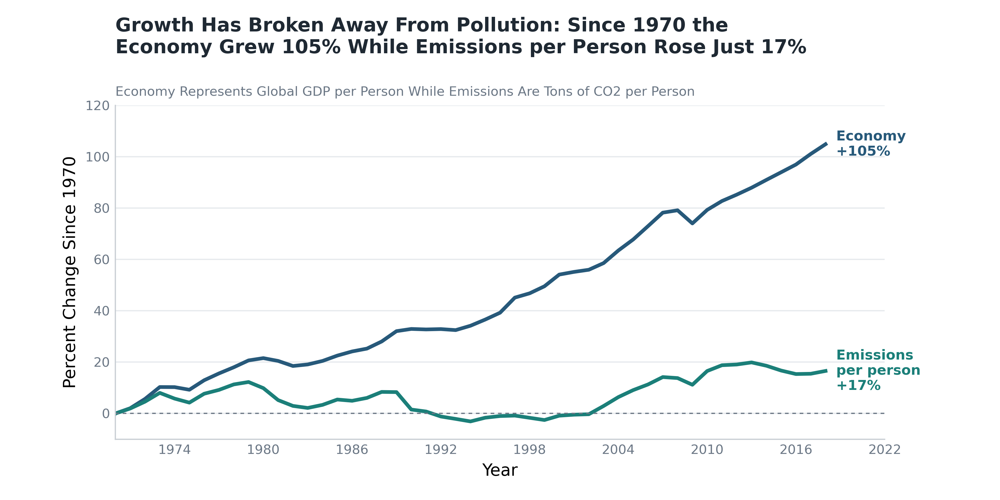
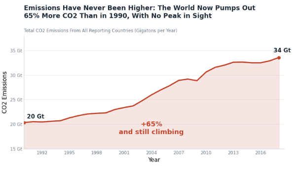

Proposition: “The world is winning the fight against climate change.”
FOR the Proposition

Design Decisions and Rationale:
- Indexed both lines to 100 in 1990 (+1.5). GDP and CO2 use different units, so putting both on the same scale makes the gap easy to see. We also population-weighted the numbers to get global per-person values. The start year helps the story, which is a small slant.
- Used emissions per person, not total (-1.5). Total emissions are up about 65% since 1990, which hurts our side. Per person looks much better, so we used that.
- Slanted title: "Growth Has Broken Away From Pollution" (-1). "Broken away" sounds permanent and causal. The chart only shows two trends moving apart. A neutral title would have been more honest and less persuasive.
- Teal for emissions, direct labels, y-axis from 90 to 165 (-0.5). Teal quietly says "good," and the tighter axis stretches the gap. The +54% and +15% labels give the takeaway with no legend. We also added a source note and said the figures are population weighted, which makes the chart look more credible.
AGAINST the Proposition

Design Decisions and Rationale:
- Plotted total emissions, not rates (+1). Total CO2 is the main drive for warming, so using CO2 as the metric is fair. We summed CO2 across individual countries only and also dropped the World and regional aggregate rows, so nothing was double counted. It's also the metric that makes the "winning" claim look weakest.
- Y-axis starts at 15 Gt, not 0 (-1.5). Going from 20 to 34 Gt looks very steep and looks like a big impact. The axis labels are visible however most readers will not realize that the axis is cut off
- Title and label: "No Peak in Sight" and "still climbing" (-1.5). The line flattened between around 2013 and 2016 before rising again. These phrases skip that plateau and make a prediction the data does not support.
- Red line and shaded area (-0.5). Red is generally read as alarm or something negative. The fill adds visual weight to the growth.
- 1990 baseline and a big +65% label (+1). 1990 is the standard baseline in climate policy, so it is easy to defend. The large label drives the number home.
Final Reflection
Picking what to plot was the easier part however having to make each chart pursuasive without being too obvious was much harder. Once the metric was chosen, everything else such as the title, color, and axis followed from it. The main goal was to not make anything too loud or else the readers would stop finding the graph trustowrthy.
The main surprising factor was how much the denominator changes the story considering both charts use the same data. When looking at it through each individual, it seems that the world is improving. However, when looking at the same data in total, the world is actually getting worse.
Both charts use real information, and still the reader who saw the "For Proposition" would be leaving with a completely different perspective than the reader who saw the opposite one. A chart can be misleading without a single false number, it just needs to answer the right question. For example, in our visualizations, the winning chart can't show that total emissions rose 65% and the losing chart isn't showing that the economy grew a lot faster than emissions per person. Something that was also noticed is readers don't typically check axis ranges or baselines, so the deception also benefits the story without lying.
We would define ethical analysis and visualization as showing the data fairly, being open to other choices, and not relying on deception or anything that would leave the viewer with false ideas in their mind. Some good boundaries between what's considered acceptable versus misleading in this sense would be whether a reader is able to see the information your sharing and is able to access the same data. Being private about something that would be important for the reader to know or distorting the information would be misleading. This includes cutting off the axis that the reader wouldn't notice or making a title that claims something bigger than the data. The short y-axis and the "no peak in sight" label are fairly close to the borders. If this were a real setting, we would have to add a note to both charts.